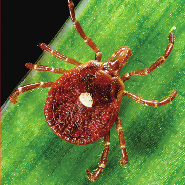
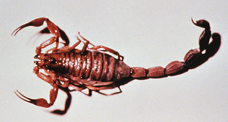
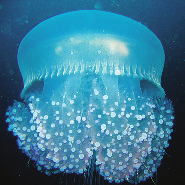
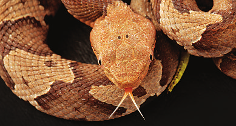
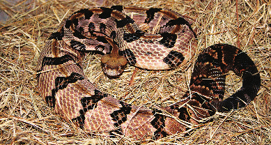
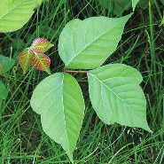
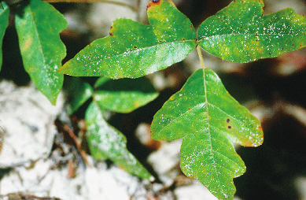
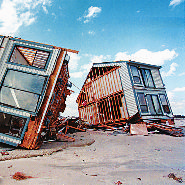
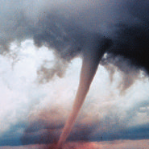
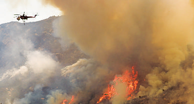

■ The fire ant both bites and stings. Its bite is used as a means to hold on so it can use its stinger. After latching on to your skin with its teeth, the fire ant delivers its painful sting. The ant swivels around the bite, stinging multiple times in a circular pattern. Although fire ants have two pairs of wings, they usually attack from the ground.
■ Mosquitoes are found all over the world. Many are known to transmit diseases such as malaria, West Nile virus, encephalitis, and dengue fever. The mosquito penetrates the skin of a human or animal with a flexible snout that draws out the blood. The itching and local swelling around the bite characterize the allergic reaction to the mosquito’s saliva.
Mosquito drawing blood.
POI- SON
2182_Tab06_129-153.qxd 8/18/11 12:21 PM Page 138
POI- SON
SAFETY TIP—Mosquitoes mature in stagnant water, their usual
★ breeding ground. Be sure to empty open containers filled with water and drain or fill in areas where water collects.
SAFETY TIP—Protect your dog and cat from heartworm dis★ ease. If there are mosquitoes in your area, your pet should be given preventive medication. Heartworm, a parasite, is transferred from one mammal (dog, cat, fox, wolf) to another by certain types of mosquito. If the mosquito bites an infected animal and then bites your pet, the worm’s larvae will be deposited into your pet’s bloodstream. As the larvae mature, they migrate to the animal’s heart. Heartworm disease is fatal but preventable. Talk to your veterinarian, and keep your pet safe.
First Aid for Bites and Stings from Flying Insects
■ Signs and symptoms: Local pain, redness, swelling, and itching; in moderate allergic reactions, possible rash or hives. In severe allergic reactions, wheezing or trouble breathing, severe swelling around the bite or sting, or swelling around the lips, tongue, or face. If you are allergic, particularly to bee or wasp venom, a single sting can cause a serious reaction or even death. Some reactions are local and affect only the skin; others are systemic and affect the whole body.
■ Treatment: If a stinger is embedded in your skin, scrape or pick it off with your fingernail. Avoid squeezing, which can release more venom into the skin. Some insects may not have stingers; if you can’t see one, assume it’s not there. A cold compress may reduce the swelling and ease the pain. For moderate reactions, a mild painkiller such as acetaminophen or ibuprofen can make you feel more comfortable.
■ To prevent infection, wash the area with soap and water. Apply an antiseptic or an antibacterial ointment. Calamine lotion may
2182_Tab06_129-153.qxd 8/18/11 12:21 PM Page 139 relieve the discomfort. Avoid scratching—this is a major cause of infections. For a systemic reaction, use an over-the-counter antihistamine to control swelling, itching, and redness. If you have a sudden and severe allergic reaction, seek immediate medical attention. (See the discussion of anaphylaxis on page 57.) People prone to severe allergic reactions should carry epinephrine injections in case they get stung.
SAFETY TIP—If you are at risk for a sudden and severe
★ allergic reaction, your doctor may suggest that you carry an allergy kit. These kits contain antihistamine pills (e.g., diphenhydramine
[Benadryl]), alcohol wipes for cleansing the injection site, and an injection of epinephrine (e.g., EpiPen) that you can give yourself in case of an emergency. Seek immediate medical care even after the use of an allergy kit.
Chiggers
Chiggers are the larval stage of the harvest mite. Mites are not insects, but rather belong to a diverse group of creatures called arachnids that includes ticks, spiders, and scorpions. Chiggers crawl onto your skin and chew up tiny parts of the inner skin so they can survive into their final adult stage as harvest mites. Contrary to popular belief, they don’t remain in the skin after feeding.
■ Chiggers tend to congregate on your ankles or wrists because your skin is thinner there, thus making it easier for this tiny animal to penetrate your skin for its meal.
■ Chiggers secrete a substance that desensitizes the area, so you don’t react to their presence immediately. In fact, you won’t feel the effects for up to 48 hours after the chiggers feed on you.
■ To determine where you were when you encountered chiggers, count back 24 to 48 hours from when you began exhibiting irritating signs of their “bite.”
POI- SON


2182_Tab06_129-153.qxd 8/18/11 12:21 PM Page 140
POI- SON
“Applying fingernail polish will suffocate the
R chiggers.” False: Chiggers don’t bore into or live
TH
E
T inside your skin. By the time a severe itching problem sets in, the chiggers are nowhere in
MY
BUS sight. Trying to smother skin damaged by chiggers may actually cause more problems.
Ticks
Ticks are small arachnids that bite into the skin and feed on blood. They can transmit Lyme disease, Rocky Mountain spotted fever, tick paralysis, and other serious diseases. Wear long sleeves and pants tucked into closed-toed shoes or boots during your travels in “tick country.”
Lone star tick.
Lone star tick (filled with blood).
Lyme Disease
Lyme disease is a progressive and debilitating bacterial disease spread by the bite of deer ticks, which are very small. Ticks must be attached to the skin for at least 24 hours to transmit the bacteria to humans.
2182_Tab06_129-153.qxd 8/18/11 12:21 PM Page 141
■ Stage 1: Days to weeks—expanding red rash around the site; possible flu-like signs and symptoms such as fever, headache, fatigue, and joint pain.
■ Stage 2: Week to months—Neurological problems (meningitis, Bell’s palsy), cardiac abnormalities, infection, and rash.
■ Stage 3: months to years—circulatory, respiratory, and neurological problems; signs and symptoms of severe arthritis.
Rocky Mountain Spotted Fever
Rocky Mountain spotted fever is a severe bacterial disease spread by the bite of dog ticks and other types of ticks.
■ Stage 1: Fever, headache, and sensitivity to light occur.
■ Stage 2: This stage lasts 3 to 4 days and is characterized by high fever and rash.
■ Deaths are rare but have been reported.
Tick Paralysis
Tick paralysis is a rare but potentially fatal disease caused when a paralyzing nerve toxin is released from the bite of a female tick.
■ Leg weakness progresses to paralysis as long as the tick is still attached.
■ Respiratory arrest is possible.
■ Deaths are rare but have been reported.
Tick Removal and First Aid
■ You can use your fingers to remove an unattached tick from your skin. Dispose of the tick immediately.
■ Remove an embedded tick with tweezers. Pull the tick straight out gently but firmly. Avoid jerking or twisting the tick or the head may remain embedded.
■ After removing the tick, wash the bite area with soap and water, and apply an antiseptic if you can.
■ The same removal procedures will work if your dog or cat has brought in ticks from outdoors. You may have to search beneath heavy fur if the tick has attached itself to the animal. Even in
POI- SON


2182_Tab06_129-153.qxd 8/18/11 12:21 PM Page 142
POI- SON
short-haired pets, ticks can be found in obscure areas, such as between the toes, or under the chin, tail, or ear flap. Be sure to look closely.
SAFETY TIP—Ticks can give dogs and cats the same diseases
★ they give humans. If left undiagnosed, Lyme disease, Rocky
Mountain spotted fever, or tick paralysis can be fatal. Be sure your pet is protected against the most common carrier, fleas, in addition to ticks.
Check with your veterinarian for the best flea and tick repellent.
Spiders
Many people fear spiders, but these fears are largely unfounded. Like scorpions, spiders are predators that help keep insect populations in check, and few species of spiders bite humans. The black widow and brown recluse spiders are exceptions: their bites can cause uncomfortable and even serious reactions.
Black widow spider.
Brown recluse spider.
2182_Tab06_129-153.qxd 8/18/11 12:21 PM Page 143
Black Widow Spiders
The adult black widow spider is medium sized, about 1/2 inch (1.3 cm)
long. The female black widow is normally shiny black, with a red hourglass marking on the underside of the abdomen. Only the female’s bite is toxic; the male is brown and is not poisonous to humans. Black widow spiders are active at night. They prefer dark corners or crevices, woodpiles, hollow stumps, sheds, outhouses, and garages. Indoors, they prefer cluttered areas in basements and crawl spaces.
■ Signs and symptoms: A mild pinprick followed by severe muscle cramping and pain progressing to the chest, back, abdomen, arms, and legs. Difficulty breathing in severe cases. Although rare, fatalities do occur, particularly in children less than 3 years old or adults more than 55 years old.
■ Treatment: Wash the bite area with soap and water. Apply ice or cold packs to relieve pain. Seek immediate medical care. Antivenin, a product that lessens the effect of the venom, should be administered only by a doctor. Most people recover within 36 to 72 hours.
Brown Recluse Spiders
The brown recluse spider is about 1/2 to 1 inch (1.3 to 2.5 cm) long. Its characteristic dark violin-shaped marking is on the back of the body
(where the legs are attached), with the base of the violin at the spider’s head and the neck of the violin pointing to the rear. These spiders seek out dark, warm, dry environments, such as attics, closets, porches, barns, basements, woodpiles, and old tires.
■ Signs and symptoms: Usually a painless bite. Possible localized swelling and inflammation occur within 1 to 2 hours. After about
6 to 12 hours, a bull’s-eye lesion with blistering or redness resembling a cigarette burn appears. If the area enlarges, the skin and tissue around it can die. If left untreated, the bite may cause widespread infection and, rarely, death.
■ Treatment: Wash the bite area with soap and water. Apply ice or cold packs to relieve pain. Seek immediate medical care.
POI- SON

2182_Tab06_129-153.qxd 8/18/11 12:21 PM Page 144
POI- SON
Scorpions
Scorpions are predatory arachnids, like spiders, but they have a true stinger located at the end of their tail. This stinger is used primarily to paralyze insect prey, but when threatened by a human, the scorpion will defend itself. A scorpion can sting multiple times. Most species cause significant local pain and swelling with little to no widespread effects.
Scorpion stings are most dangerous to young children and elderly people. Pets are also at risk. Scorpion stings are not a major health concern for the United States except for stings of the bark scorpion in the Southwest. However, a more poisonous variety that lives in certain tropical countries can deliver a fatal sting.
Scorpion.
■ Signs and symptoms: Immediate pain, burning, and swelling and redness at the sting site. The venom affects the nervous system and causes muscle twitching, which can progress to convulsions (seizures).
■ Treatment: Wash the sting area with soap and water. Ice or cold packs can be applied to relieve pain. Seek medical care without delay.


2182_Tab06_129-153.qxd 8/18/11 12:21 PM Page 145
Marine Animals
Marine animals can inflict pain with their teeth, stingers, or even prickly body parts. Most such encounters occur in salt water and begin when the animal tries to defend itself. It’s best to swim near a beach with a lifeguard and observe posted signs, which may alert you to danger from hazardous animals. Do not touch unfamiliar marine life. Even dead animals and severed tentacles may contain venom.
Types of Stinging Marine Animals
Three marine animals commonly involved in stinging incidents are jellyfish, sea anemones, and stingrays:
■ Jellyfish have a nearly transparent body with long, fingerlike structures called tentacles. Stinging cells inside the tentacles can hurt you if you come in contact with them. Some stings can cause serious harm.
■ Sea anemones have small, soft bodies that resemble flowers. They use their tentacles to catch prey. Their sting, like that of many bees, causes local pain, tenderness, and swelling.
■ Stingrays have a long, whiplike tail with sharp spines that contain venom. A large stingray may cause serious injury or even death if the barb penetrates internal organs.
Jellyfish.
Sea anemone.
POI- SON

2182_Tab06_129-153.qxd 8/18/11 12:21 PM Page 146
POI- SON
Stingray.
First Aid for Marine Animal Bites and Stings
■ Signs and symptoms: Pain, burning, swelling, redness, and bleeding around the bite or sting. Muscle cramps, diarrhea, difficulty breathing, nausea or vomiting, and abdominal pain. Variable generalized signs and symptoms.
■ Treatment: Wear gloves if possible, and wipe off stingers or tentacles with a towel. Be careful to avoid contact. Wash the area with salt water. In some cases, soaking the wound in very warm (not hot) water for 30 to 90 minutes is recommended to help inactivate the toxin. The area can also be soaked in alcohol or vinegar. If the sting or bite has caused bleeding, dress the wound. An over-thecounter antihistamine helps with localized swelling, tenderness, or itching. Hydrocortisone cream reduces swelling. Give acetaminophen, aspirin (if more than 18 years old), or ibuprofen for pain.
Seek immediate medical care if the person has difficulty breathing, uncontrolled bleeding, or other generalized symptoms.
2182_Tab06_129-153.qxd 8/18/11 12:21 PM Page 147
SAFETY TIP—Don’t rinse the injury with fresh water. Fresh
★ water will activate any stinging cells that haven’t already ruptured and will cause more painful stings. Rubbing the area will have the same effect.
Snakes
Poisonous snakes inject a toxic venom when they strike their victim.
Most poisonous snakes belong to a group known as pit vipers. These snakes have two large fangs, located in the upper front portion of the mouth. The two fangs are hollow and work like a hypodermic needle to inject the venom. The coral snake is also poisonous, but it is not a pit viper. It has small teeth instead of fangs and has to chew to inflict its poison. It’s important to identify the snake, if at all possible, because the type of venom makes a difference in the treatment given by the emergency medical team.
SAFETY TIP—Pit vipers have a triangular head, pupils that
★ resemble vertical slits, and a telltale pit on each side of the head between the eye and the mouth. These pits, heat-sensing organs, make it possible for the snake to strike a warm-blooded victim, even one it can’t see.
Common Pit Vipers
In the United States, common pit vipers include the rattlesnake, copperhead, and water moccasin (also called the cottonmouth).
POI- SON


2182_Tab06_129-153.qxd 8/18/11 12:21 PM Page 148
POI- SON
Timber rattlesnake.
Copperhead.

2182_Tab06_129-153.qxd 8/18/11 12:21 PM Page 149
Water moccasin (cottonmouth).
First Aid for a Bite from a Pit Viper
■ Signs and symptoms: One to two punctures made by the hollow fangs of the snake. Severe pain within 5 to 10 minutes, accompanied by swelling and discoloration around the bite area, progressing up the bitten extremity. If treatment is delayed, possible kidney and liver damage may result from toxins.
■ Treatment: Remove constricting clothing or jewelry, clean the bite with soap and water, immobilize the bite area, and keep it lower than the heart. Bandage the wound, and get the person to a hospital or clinic as soon as possible. The chances for recovery are good if the person receives care within 2 hours. Severe bites can be treated with antivenin, antibiotics, and antihistamines to reduce swelling, but time and identification of the snake are of the utmost importance.
Coral Snake
A coral snake is small and ringed with red, yellow, and black. It has a black head and red bands touching yellow bands. The classic rhyme is
“Red touching yellow, kill a fellow. Nose is black, head is yellow.” The nonpoisonous scarlet snake and scarlet kingsnake have a similar pattern
POI- SON

2182_Tab06_129-153.qxd 8/18/11 12:21 PM Page 150
POI- SON
but they have red noses and no red bands touching yellow bands.
Unlike pit vipers, coral snakes lack fangs, and because their mouths are small and their teeth are short, most coral snakes bite by chewing on toes and fingers. Their bite is usually painless, with little or no swelling or discoloration. However, it is highly poisonous. Symptoms may be delayed for several hours, but when they do occur, they progress rapidly.
Coral snake.
First Aid for a Bite from a Coral Snake
■ Signs and symptoms: Nausea, drowsiness, vomiting, marked salivation, and difficulty breathing. Delayed signs and symptoms may include numbness at the bite area, headache, and eventual muscular paralysis.
■ Treatment: Remove constricting clothing or jewelry, clean the area and dress the wound, mark swelling with a pen to determine the rate and amount, and get the person to a hospital or clinic as soon as possible.
POISONOUS PLANTS
Plant poisonings can occur by ingestion or skin contact.
2182_Tab06_129-153.qxd 8/18/11 12:21 PM Page 151
Ingestion of Poisonous Plants
Frequently, curious children and pets ingest plants that weren’t meant to be eaten. The poisonous quality of a plant depends on several factors:
■ The type and amount of poison ingested. For example, oleander is one of the most toxic plants known. Ingestion of a single leaf can be fatal to a young child.
■ The part of the plant. For example, rhubarb stalks are edible but the leaves are poisonous. In contrast, all parts of jimson weed (also called datura, or angel’s trumpet) are highly toxic.
Most plant ingestions involve only a small amount and produce only nausea and vomiting. Clean the mouth, and contact the poison control center for plant protocols. If in doubt, seek immediate medical care.
Contact Poisoning by Poison Ivy, Poison Oak, and Poison Sumac
Poison ivy, poison oak, and poison sumac have a toxic oily sap called urushiol in their roots, stems, leaves, and fruit. The sap is released when the plant is bruised. It may be deposited on the skin by direct contact with the plant or by contact with contaminants, including shoes, clothing, tools, or animals. Urushiol is still present after the plant has died. Severe poisoning also has occurred from sap-coated soot in the smoke of burning plants.
Inhaling smoke laced with urushiol can cause severe allergic reactions.
Poison Ivy
The leaves of poison ivy consist of three pointed leaflets. The edges can be smooth or toothed and vary in length from 2 to 4 inches (5 to 10 cm).
Poison ivy can grow as a ground cover, shrub, or climbing vine. The leaves are reddish in spring and turn green during the summer.
Poison Oak
Poison oak grows as a shrub or a climbing vine. Its leaves are shaped like oak leaves. As with poison ivy, poison oak leaves are divided into three leaflets. The underside of the leaves, a lighter green than the surface, is covered in hairy filaments.
POI- SON



2182_Tab06_129-153.qxd 8/18/11 12:21 PM Page 152
POI- SON
Poison Sumac
Poison sumac grows as a dense shrub or small tree. Its leaves grow in pairs, anywhere from 7 to 13. Unlike poison ivy leaves, poison sumac leaves never have a toothed outline. Small white or gray berries hang in clusters from the stalk.
Poison oak.
Poison ivy.
Poison sumac.
2182_Tab06_129-153.qxd 8/18/11 12:21 PM Page 153
First Aid for Contact Poisoning from a Poisonous Plant
■ Signs and symptoms: Severe itching followed by red inflammation and blistering; and oozing sores in serious cases. Once the sap has been cleaned from all contact points, the contamination stops spreading.
■ Treatment: Immediately wash exposed skin and clothing thoroughly with plenty of soap and water. If your pet has been exposed, bathe your pet thoroughly. Symptoms usually develop within 24 to
48 hours after contact with the oil. If poisoning develops, treat the blisters and inflammation with dressings of calamine lotion, Epsom salts, or bicarbonate of soda. Medical attention is required for severe rashes, especially those covering large areas, involving the eyes, nose, and mouth, or accompanied by fever. A prescription medication such as prednisone may help to contain the rash.
R “Breaking the blisters releases urushiol that can
TH
E
T spread.” False: The rash spreads from the poisonous sap, not by contamination from sores.
MY
BUS Urushiol is not present in the blister fluid.
POI- SON
2182_Tab07_154-198.qxd 8/18/11 12:34 PM Page 154
DIS-
ASTER
Tab 7: Natural Disasters
Natural disasters can take many forms:
■ Flood
■ Hurricane
■ Tornado
■ House fire
■ Wildfire
■ Earthquake
■ Tsunami
■ Volcanic eruption
■ Landslide or mudslide
■ Avalanche
■ Winter storm and extreme cold
BE PREPARED FOR A NATURAL DISASTER
A natural disaster can strike quickly and without warning. Although you can’t foresee everything, a little advance planning can give you the edge you need to survive. To be prepared, take three steps:
■ Develop a disaster action plan.
■ Assemble survival supplies.
■ Learn in advance how to help others in need.
At the close of this section, we’ll also identify special steps you should take to safeguard livestock and pets.
SAFETY TIP—Don’t wait until an actual disaster occurs to
★ develop an action plan. Planning at this late stage is planning to fail. The end result could be catastrophic—your survival is at stake.
2182_Tab07_154-198.qxd 8/18/11 12:34 PM Page 155
Develop a Disaster Action Plan
What would you do if utilities such as water, gas, and electricity were cut off? Or if you had only minutes to flee your home from approaching wildfires? Knowing the answer in advance is your best protection. Your disaster action plan will be unique to your family or group. The age, health, abilities, and special requirements of group members, your location, community resources, and even pets will all figure into your strategy. Here are the steps to take in developing your natural disaster action plan:
■ Discuss with your family/group the types of disaster(s) most likely to occur in your area, what the consequences may be, and what you would do in each case. For example, should you prepare for a long-term power outage, or to flee your home because of rising flood waters?
■ Decide the conditions for activating your plan. For example, will you activate it when a tornado has been spotted in your area, or a smoke alarm has gone off in your home or workplace?
■ Determine where members should go and what they should do when action needs to be taken.
■ Always have a backup plan. For example, select alternative sites in advance in case the main site is no longer viable or accessible.
■ Plan how to take care of any pets and livestock. (See the tips at the end of this section.)
■ Identify a place where your family/group can reunite after the disaster. It’s a good idea to meet at a central point where most of your preparedness supplies are stored. (See the next section.)
■ Identify the locations of your nearest fire and police stations and your local medical facility. Enter their contact numbers in your cell phone directory and/or post a list beside your home phone.
■ Identify the people you will need to contact outside the area, and find their phone numbers. Enter these in your cell phone directory and/or post a list beside your home phone.
DIS-
ASTER
2182_Tab07_154-198.qxd 8/18/11 12:34 PM Page 156
DIS-
ASTER
■ Know where your gas, electric, and water main shutoffs are. Know how to turn off each utility. If in doubt, ask your utility company.
Keep necessary tools near these areas.
■ Store all valuables and critical documents in waterproof containers.
Keep them in one accessible place so you can gather them quickly if you need to flee your home.
■ Make sure all members know how to access local radio or television stations for emergency broadcast information.
■ Make sure your vehicle is fueled with more than half a tank of gas at all times.
■ Maintain your plan. Make sure all family/group members are up to date on the current plans.
STEPS TO SAFETY
1. Find out what kinds of natural disaster are most likely to happen in your area.
2. Learn your community’s warning signals—know what they sound like and what you should do when you hear them.
3. Find out about animal care after a disaster.
4. If necessary, know how to provide ongoing care to elderly or disabled family members or neighbors needing assistance in a disaster.
5. Learn the disaster plans at your workplace, your children’s school or daycare center, and other places where your family/group spends time.
Assemble Survival Supplies
If you’ve assembled your survival supplies in advance, you’ll be able to act at a moment’s notice with the confidence that you can get through the disaster. Make sure your first aid, survival, and disaster supply kits have everything you need to survive for at least 72 hours.
(See Tab 1, Basic Safety for detailed instructions.) You’ll also need the
2182_Tab07_154-198.qxd 8/18/11 12:34 PM Page 157 following emergency items to keep you and your family/group safe during a natural disaster:
■ Flashlight and portable radio with batteries (long-life alkaline batteries; store them in a cool dry place)
■ Enough clean water for each person for at least 3 days (Allow
1 gallon [4 liters] per person per day, half to drink and half to use for cooking and sanitation. The average person needs 2 quarts
[2 liters] of water daily just for drinking. Reminder: 4 quarts equal
1 gallon, 1 quart equals 32 ounces, and 1 liter equals 1000 mL.)
■ Emergency food for at least 3 days (allow three meals per person per day)
■ Required medications
■ Blankets, warm clothes, gloves, and sturdy shoes
■ Mosquito netting if you are in a damp, warm environment
■ Pipe or crescent wrenches to turn off gas and water supplies
SAFETY TIP—Stock emergency supplies for your pets. Each
★ pet should have a carrier and enough fresh food and water, medications, and other essentials to ride out the disaster with you.
Be Prepared to Help Others in Need
In special need during a disaster are the injured, trapped, disabled, children, and frail elderly. Follow the steps outlined here:
If someone is injured:
■ Check the scene to ensure you can give assistance without endangering yourself.
■ Give first aid if anyone needs it. See Tab 2: CPR, Tab 3: Medical
Emergencies, Tab 4: Injuries and Wounds, Tab 5: Environmental
Emergencies, and Tab 6: Poisons, Bites, and Stings.
■ Do not move seriously injured persons unless they are in immediate danger of further injury.
DIS-
ASTER
2182_Tab07_154-198.qxd 8/18/11 12:34 PM Page 158
DIS-
ASTER
■ Cover injured persons with blankets to keep them warm.
■ Ask bystanders for help, and phone 911.
■ Seriously injured or burned persons should be treated and transported by medical professionals immediately.
If someone is trapped:
■ Check the scene to ensure you can give assistance without endangering yourself.
■ If it’s safe to do so, try to free the person by removing debris and transporting the person to safety.
Others in need:
■ Include in your disaster plan actions to assist your neighbors in need such as frail elders, people with disabilities, and families with infants and/or young children.
■ Don’t forget about helping guide and assistance dogs for people with special needs (e.g., the visually or hearing impaired).
A dog may become disorientated and need safety during a disaster.
Preparing Your Pets and Livestock for Natural Disasters
remember pets and livestock. If you are like millions of animal owners, your pet is an important member of your household. You’ll increase the likelihood that your animals will survive a disaster by taking the following simple steps:
■ Assemble an animal emergency supply kit (see Tab 1: Basic Safety).
Include a pet first aid book.
■ Have needed medications, your pet’s medical history, and your veterinarian’s contact numbers.
■ Store at least 3 days’ worth of pet food and water in airtight containers.
■ Include identification. Small animals need a collar with ID tag, a microchip (see safety tip immediately following), or a tattoo.
Livestock need a microchip, tattoo, ear tag, or halter tag.


2182_Tab07_154-198.qxd 8/18/11 12:34 PM Page 159
■ Prepare a pet carrier, harness, or leash.
■ Make sure your pets’ vaccinations are current. Animal shelters may require proof of immunization.
■ Have current photographs of all your animals (see photos of Darby and Dude).
■ Include litter, litter boxes, paper towels, and trash bags in emergency supplies.
■ Don’t forget familiar items such as toys, treats, and bedding. These can help reduce stress.
■ Locate and prearrange an evacuation site outside your immediate area that will accept animals. Research pet-friendly hotels, veterinary hospitals, boarding stables, kennels, and animal shelters. Develop a buddy care system.
Current photo: Darby.
Current photo: Dude.
DIS-
ASTER
2182_Tab07_154-198.qxd 8/18/11 12:34 PM Page 160
DIS-
ASTER
SAFETY TIP—Microchip your animal (dog, cat, horse, or any
★ other). A microchip implant, no larger than a grain of rice, is placed under the skin, usually on the animal’s back. Each chip has a unique number that shows up on an electronic scanner. After you register this number with a central data bank, it will trace you when your pet is scanned at an animal shelter or veterinary office. Ask your veterinarian about getting a chip implanted; it can save the life of a pet that’s gotten lost and slipped out of its collar, halter, or harness.
Bear in mind that you may not be home with your animals when disaster strikes. Take the following steps to prepare in advance for such a situation:
■ Preplace stickers on your front and back house doors, barn doors, and pasture entrances to notify rescue personnel that animals are on your property.
■ List the number, species, and location of your animals and their favorite hiding spots.
■ Post your contact information and the location of your evacuation supplies.
■ Designate an off-site person, such as a willing neighbor, to tend to your animals. This person should be familiar with your animals and have access to your home, kennel, or barn.
FLOOD
Floods are one of the most common hazards in many countries.
■ Flood effects can be local, affecting a neighborhood or community, or widespread, affecting entire river basins.
■ Not all floods are alike. Some can take days to develop. However, flash floods can occur quickly, sometimes in just a few minutes.
■ Flooding can also occur when a dam breaks or a levee is breached, producing effects similar to a flash flood.

2182_Tab07_154-198.qxd 8/18/11 12:34 PM Page 161
Extensive flooding.
FLOOD WATCH: This indicates the possibility of flooding in your area.
FLOOD WARNING: Ongoing or expected flooding. If advised to evacuate, do so immediately.
FLASH FLOOD WATCH: Possibility of flooding within hours or minutes. Be prepared to move to higher ground.
FLASH FLOOD WARNING: Occurrence of a flash flood. Seek higher ground immediately.
Plan Ahead
■ Know your area’s flood risk. If unsure, call your local planning and zoning department.
■ Know whether or not your house was built in a floodplain, and if so, whether appropriate preventive measures were incorporated (i.e., elevated pilings and a reinforced foundation).
■ Elevate the furnace, water heater, and electrical panel if your home is susceptible to flooding.
DIS-
ASTER
2182_Tab07_154-198.qxd 8/18/11 12:34 PM Page 162
DIS-
ASTER
■ Install “check valves” in sewer traps to prevent floodwater from backing up into the drains of your house.
■ Construct barriers (levees, beams, floodwalls) to stop floodwater from entering the building.
■ Seal walls in basements with waterproofing compounds to avoid seepage.
■ If it has been raining hard for many hours or steadily for many days, be alert for a flood warning.
■ Listen to your local radio or television station for flood information.
During a Flood
■ Listen to the radio or television for information.
■ Be aware that flash flooding can occur. If a flash flood warning has been issued, move immediately to higher ground.
■ Be aware of streams, drainage channels, canyons, and other areas known to flood suddenly. Flash floods can occur in these areas with or without rain clouds or heavy rain.
Preparing to Evacuate
■ Secure your house. If you have time, bring in outdoor furniture.
Move essential items to an upper floor.
■ Turn off utilities at the main switches or valves if instructed to do so.
■ Disconnect electrical appliances. Do not touch electrical equipment if you’re wet or standing in water.
■ Once outside, don’t walk through moving water. Six inches (15 cm)
of moving water can make you fall. If you have no choice, walk where the water is still. Use a stick to check the firmness of the ground in front of you.
When Driving in Flood Conditions
■ Six inches (15 cm) of water will reach the bottom of most passenger cars and cause loss of control and possible stalling.
■ One foot (30.5 cm) of water will float many vehicles.
■ Two feet (61 cm) of rushing water can carry away most vehicles, including sport utility vehicles and pick-up trucks.
2182_Tab07_154-198.qxd 8/18/11 12:34 PM Page 163
■ Never drive into flooded areas.
■ Heed barricades. Don’t drive around them.
■ If your vehicle stalls in rapidly rising waters, abandon it immediately and climb to higher ground.
■ If floodwaters rise around your vehicle, abandon it and move to higher ground if you can do so safely. You and the vehicle can be quickly swept away.
SAFETY TIP—Don't expect flooding to occur only when it’s
★ raining. A broken dam or levee can also cause unexpected flooding.
After a Flood
■ Help injured or trapped persons if you can do so without endangering yourself.
■ Listen for news reports to learn whether the community’s water supply is safe to drink.
■ Avoid contact with floodwaters; they may be contaminated by oil, gasoline, or raw sewage. Water may also be electrically charged from underground or fallen power lines.
■ Be careful in areas where floodwaters have receded. Roads may have weakened and could collapse under the weight of a car.
■ Stay away from fallen power lines, and report them to the power company.
■ Return home only when authorities indicate it’s safe.
■ Use extreme caution when entering buildings; there may be hidden damage, particularly in foundations.
■ Service damaged septic tanks, cesspools, pits, and leaching systems as soon as possible. Damaged sewage systems are serious health hazards.
■ Clean and disinfect everything that got wet. Mud left from floodwater can contain sewage and toxic chemicals.
DIS-
ASTER


2182_Tab07_154-198.qxd 8/18/11 12:34 PM Page 164
DIS-
ASTER
SAFETY TIP—Floodwaters can pose a variety of health risks.
★ Avoid direct contact, and clean and disinfect everything that got wet. Discard food and water supplies that could have come into contact with floodwaters.
HURRICANE
A hurricane is an intense tropical storm system. Powered by heat from the sea, it is steered erratically by the easterly trade winds and the temperate westerly winds, as well as by its own energy. As it moves ashore, a hurricane brings with it a storm surge of ocean water along the coastline, high winds, tornadoes, torrential rains, and flooding. It can cause damage several hundred miles (or kilometers) inland. Winds can exceed 155 miles (249 km) per hour.
Hurricane: radar image.
Hurricane damage.
2182_Tab07_154-198.qxd 8/18/11 12:34 PM Page 165
HURRICANE: This is an intense tropical weather system of strong thunderstorms and maximum sustained winds of 74 mph
(64 knots or 119 km/hr) or higher.
HURRICANE/TROPICAL STORM WATCH: This watch indicates the possibility of hurricane or tropical storm conditions in the specified area, usually within 36 hours. Tune in to a radio or television for information.
HURRICANE/TROPICAL STORM WARNING: This warning indicates the likelihood of winds 74 mph (64 knots or 119 km/hr)
or higher, or dangerously high water and rough seas, in
24 hours or less.
STORM SURGE: A dome of water pushed onshore by hurricane and tropical storm winds, storm surges can reach 25 ft (8 m) in height and 50–1000 miles (80–1609 km) in width.
STORM TIDE: This is a combination of storm surge and the normal tide. A 15-ft (5-m) storm surge combined with a 2-ft
(0.6-m) normal high tide would create a 17-ft (5.5-m) storm tide.
TROPICAL DEPRESSION: This is an organized system of clouds and thunderstorms with a defined surface circulation and maximum sustained winds of 38 mph (33 knots or 61 km/hr) or less.
Sustained winds are defined as 1-minute average wind measured at about 33 ft (10 m) above the surface.
TROPICAL STORM: This is an organized system of strong thunderstorms and maximum sustained winds of 39–73 mph
(34–63 knots or 62–118 km/hr).
Hurricane Categories
Hurricanes are classified in five categories according to wind speed, central pressure, and damage potential. Category 3 and higher hurricanes are considered major, although category 1 and 2 storms are still extremely dangerous.
DIS-
ASTER
2182_Tab07_154-198.qxd 8/18/11 12:34 PM Page 166
DIS-
ASTER
SAFFIR–SIMPSON HURRICANE SCALE
Scale Sustained
Winds
Damage
Storm
Number
Surge
(Category)
74–95 mph
Minimal:
4–5 ft
(119–153 km/hr)
Unanchored
(1.2–1.5 m)
mobile homes, vegetation
96–110 mph
Moderate: All
6–8 ft
(154–177 km/hr)
mobile homes,
(1.8–2.4 m)
roofs, small crafts, flooding
111–130 mph
Extensive: Small
9–12 ft
(178–209 km/hr)
buildings; low-lying
(2.7–3.6 m)
roads cut off
131–155 mph
Extreme: Roofs
13–18 ft
(210–249 km/hr)
destroyed, trees
(3.9–5.4 m)
down, roads cut off, mobile homes destroyed, beach homes flooded
More than
Catastrophic: Most
Greater
155 mph buildings and than18 ft
(249 km/hr)
vegetation destroyed,
(5.4 m)
major roads cut off, homes flooded
Plan Ahead
■ Be ready to drive up to 50 miles (80 km) inland.
■ Make plans to secure your property.
■ Know how to turn off gas, electricity, and water.
2182_Tab07_154-198.qxd 8/18/11 12:34 PM Page 167
■ Permanent storm shutters offer the best protection for windows.
You can also board up windows with 1/2-inch (1.3-cm) plywood, cut to fit and ready to install. Be sure to mark which board fits which window. Tape doesn’t prevent windows from breaking.
■ Secure outdoor objects or bring them indoors.
■ Determine how and where to secure your boat.
■ Be sure trees and shrubs around your house are well trimmed.
■ Clear loose and clogged rain gutters and downspouts.
“Most people are killed by hurricane winds and
R the damage they cause.” False: Nine out of 10
TH
E
T hurricane deaths are from inland flooding. Your biggest threat is water, including the surge afterMY
BUS effects. With the ground saturated, water won’t drain off as quickly.
During a Hurricane
■ Listen to a battery-operated radio or television for progress reports.
■ Stay inside and away from all windows and glass doors.
■ Close all interior doors; secure and brace outside doors.
■ Keep curtains and blinds closed. Don’t be fooled if there’s a lull; it could be the eye of the storm, and winds will pick up again.
■ Take refuge in a small interior room, closet, or hallway on the lowest level, or in the basement.
■ Lie on the floor under a table or other sturdy object.
When to Evacuate
■ If local authorities direct you to do so. Be sure to follow their instructions.
■ If you live in a mobile home or temporary structure. Such shelters are particularly hazardous during hurricanes no matter how well they’re fastened to the ground.
DIS-
ASTER
2182_Tab07_154-198.qxd 8/18/11 12:34 PM Page 168
DIS-
ASTER
■ If you live in a high-rise building. Hurricane winds are stronger at higher elevations.
■ If you live on the coast, on a floodplain, near a river, or on an inland waterway. Such areas are vulnerable to flooding.
■ If you feel you are in danger. Trust your instincts.
After a Hurricane
■ Help injured or trapped persons if you can do so without endangering yourself.
■ Be informed: Listen to radio or television for official information.
■ Return home only after officials advise that it’s safe.
■ Avoid fallen power lines.
■ Check for potential risks such as gas leaks (shut off the main gas valve if you suspect a leak or smell natural gas) and damaged electrical wiring (shut off power at the control box if your house wiring is damaged).
■ Check for sewage and water line damage.
TORNADO
A tornado is spawned from violent thunderstorms. It can cause fatalities and devastate an area in seconds.
■ A tornado appears as a rotating, funnel-shaped cloud that extends from a thunderstorm to the ground.
■ Its whirling winds can reach 300 mph (483 km/hr).
■ Damage paths can be more than 1 mile (1.6 km) wide and 50 miles
(80 km) long.
■ Before a tornado hits, the wind may die down and the air may become very still.


2182_Tab07_154-198.qxd 8/18/11 12:34 PM Page 169
Funnel cloud.
Tornado damage.
TORNADO WATCH: The weather conditions in your area are favorable for a tornado. Remain alert for approaching storms.
Watch the sky and stay tuned to your local radio or television for nformation.
TORNADO WARNING: This indicates a sighting or other indication of a tornado on weather radar. Follow your tornado plan and seek shelter immediately!
Plan Ahead
■ Learn the warning signals (siren sounds) in your area.
■ Conduct safety drills at home with your family/group.
■ Make sure all members of your family/group know the procedures to follow if they are at work or school when a tornado hits.
DIS-
ASTER
2182_Tab07_154-198.qxd 8/18/11 12:34 PM Page 170
DIS-
ASTER
SAFETY TIP—Be alert to changing weather conditions. Listen to
★ local radio or television newscasts for the latest information.
Look for approaching storms; dark, often greenish sky; large hail; a large, dark, low-lying cloud (particularly if rotating); or a loud roar like that of a freight train. If you see approaching storms, be prepared to take shelter immediately.
R “A car can outrun a tornado.” False: A tornado’s
TH
E
T speed and direction change suddenly and quickly. Seek shelter in a building or on a low
MY
BUS area of ground.
During a Tornado
If a tornado warning has been issued in your area, seek shelter immediately.
If you are indoors:
■ Whether in your own home or a school, workplace, hospital, shopping center, or high-rise building, the safest place is underground
(a storm cellar or basement) or on the lowest building level. Go there and stay there until the tornado warning has ended.
■ If you can’t get to these, go to the center of the smallest interior room (closet, interior hallway) on the lowest level.
■ Stay away from corners, windows, exterior doors, and outside walls.
Put as many walls as possible between you and the outside.
■ Get under a sturdy table and use your arms to protect your head and neck. Do not open windows.
If you are in a vehicle, trailer, or mobile home:
■ At the first sign of severe weather, get out immediately. Seek shelter elsewhere, such as at a community center or designated
2182_Tab07_154-198.qxd 8/18/11 12:34 PM Page 171 storm shelter, or go to the lowest floor of a sturdy nearby building. Mobile homes, even if fastened down, offer little protection from tornadoes.
■ Never try to outrun a tornado in a car or truck.
If you are outside with no shelter:
■ Lie flat on the ground or in a ditch or depression with your hands over your head and neck. Do not get under an overpass or bridge;
you’re safer in a low, flat location.
■ Watch out for flying debris; this causes most fatalities and injuries during a tornado.
■ Be aware of the potential for flooding.
After a Tornado
■ Stay in your shelter until it’s safe to leave.
■ Help injured or trapped persons if you can do so without endangering yourself.
■ Check for risks such as fire hazard or gas leaks. Shut off the main gas valve if you suspect a gas leak or smell natural gas. Shut off power at the control box if there is any damage to your house wiring.
■ Watch out for fallen power lines and stay out of damaged areas.
HOUSE FIRE
Fire is the combustion of flammable materials producing heat, light, and often smoke. House fires can be highly destructive and even lethal.
Plan Ahead
■ Review escape routes with your family/group. Practice escaping from each room. Draw a floor plan with at least two ways of escaping every room.
■ Learn to STOP, DROP to the ground, and ROLL if clothes catch on fire (see page 175).
DIS-
ASTER
2182_Tab07_154-198.qxd 8/18/11 12:34 PM Page 172
DIS-
ASTER
■ Install smoke alarms on every level of your house. Attach them to the ceiling or 4 to 12 inches (10 to 30 cm) below it on the wall.
Place alarms at the top of open stairways, or at the bottom of enclosed stairs and near (but not in) the kitchen. Test and clean smoke alarms once a month, and replace batteries at least once a year. Replace the alarm itself every 10 years.
■ Install a fire extinguisher. Place the ABC type (see the box immediately following) in your home or office.
■ Replace electrical wiring if it’s frayed or cracked (call an electrician if you aren’t sure). Wiring should not run under rugs or over nails.
■ Don’t overload outlets or extensions. Outlets should have cover plates and no exposed wiring.
■ Have an escape ladder available. These are easily purchased and will help you escape if you’re above the ground floor and cannot get out through a door.
■ Make sure windows are not nailed or painted shut. Security gratings and burglar bars should have a fire safety feature that lets them be easily opened from the inside.
ABC FIRE EXTINGUISHERS
The most typical hand-held fire extinguisher is an ABC or “dry chemical”
type and is suitable for class A, B, and C fires. The extinguishing agent is a powder. The extinguisher is light and very effective for its size and weight.
2182_Tab07_154-198.qxd 8/18/11 12:34 PM Page 173
Class A: Fires in ordinary combustible materials such as wood, cloth, paper, rubber, and plastic
Class B: Fires in flammable liquids, combustible liquids, petroleum greases, tars, oils, oil-based paints, solvents, lacquers, alcohols, and flammable gases
Class C: Fires that involve energized electrical
A equipment
B
Caution: Do not use water or water-type extinguishers on electrical fires. Water conducts electricity.
SAFETY TIP—When using an ABC fire extinguisher, know the
★ PASSsystem.
A
B
Step 1. Pull the pin.
Step 2. Aim the nozzle.
Continued
DIS-
ASTER
2182_Tab07_154-198.qxd 8/18/11 12:34 PM Page 174
DIS-
ASTER
A
B
Step 3. Squeeze the handle.
Step 4. Sweep the fire at its base.
SAFETY TIP—If you discover a fire in a public building (e.g.,
★ school, workplace, hospital, child care center), remember RACE:
R: Rescue anyone in danger.
A: Activate the fire alarm.
C: Contain the fire.
E: Extinguish the fire.
During a Fire
Escape the fire if possible:
■ If on the ground floor, leave through a door or open a window and climb through.
■ Do not use elevators to escape from an upper floor; use stairs.
■ Stay low to the ground; smoke and heat rise. The air is clearer and cooler near the floor.
■ Close doors behind you as you escape to delay the spread of the fire.
2182_Tab07_154-198.qxd 8/18/11 12:34 PM Page 175
■ Cover your mouth with a cloth to avoid inhaling smoke and gases.
If you are in an upper room with a closed door:
■ If smoke is pouring in around the bottom of the door or it feels hot, keep the door closed.
■ If there is no smoke at the bottom or top of the door and it does not feel hot, open it slowly. If you see smoke or fire in the hall, close the door.
■ Open a window for fresh air while awaiting rescue.
If your clothes catch fire:
■ Stop, drop, and roll until the fire is extinguished. Running only makes the fire burn faster.
Step 1. Stop.
Step 2. Drop.
Step 3. Roll.
Step 4. Fire extinguished.
DIS-
ASTER
2182_Tab07_154-198.qxd 8/18/11 12:34 PM Page 176
DIS-
ASTER
To escape from a high-rise building:
EMERGENCY EXIT
EMERGENCY EXIT
Escape route 2
You are here
You are here
Escape route 1
EMERGENCY EXIT
EMERGENCY EXIT
1. Use the closest exit.
2. Use another route if your first route is blocked.
3. As you go, if things start to
4. As you exit, face away from fall, take cover under a table windows and glass.
or desk.
2182_Tab07_154-198.qxd 8/18/11 12:34 PM Page 177
5. Do not use elevators.
6. Keep to the right while going down stairwells. Emergency workers will walk up the left
(their right).
“The smoke from fire isn’t the real danger.”
R False: Smoke kills more people than burns do.
TH
E
T In a matter of minutes, fire robs the air of oxygen
MY
BUS and fills it with carbon monoxide and other deadly gases.
“You can leave home while food is in the oven.”
R False: Most house fires start in the kitchen. Turn
TH
E
T your oven and burners off if you must leave the kitchen while cooking. Keep your oven and
MY
BUS stovetop clean—grease and spilled food can start a fire.
DIS-
ASTER
2182_Tab07_154-198.qxd 8/18/11 12:34 PM Page 178
DIS-
ASTER
Fire Hazards and Fire Safety Tips
Handle flammable items with care:
■ Never use gasoline, benzine, or any other flammable liquid indoors.
■ Store flammable liquids in approved containers in well-ventilated storage areas.
■ Never smoke near flammable liquids.
■ Discard all rags or materials that have been soaked in flammable liquids. Leave them outdoors in a metal container.
■ Insulate chimneys and place spark arresters on top. The chimney should be at least 3 ft (91.5 cm) higher than the roof. Remove branches hanging above and around the chimney.
Take appropriate precautions with alternative heating sources:
■ Be careful when using space heaters and other alternative heating sources.
■ Place space heaters at least 3 ft (91.5 cm) away from flammable materials. Make sure the floor and nearby walls are properly insulated.
■ Use only the type of fuel designated for your unit, and follow the manufacturer’s instructions.
■ Have heating units inspected and cleaned annually by a certified specialist.
■ Keep a screen in front of your fireplace.
■ Keep matches and lighters up high, away from children, and in a locked cabinet if possible.
■ Store ashes in a metal container outside and away from your house.
■ Keep open flames away from walls, furniture, drapery, and flammable items.
If you smoke:
■ Never smoke in bed.
■ Never smoke if you are feeling drowsy or are taking medications with a sedative effect.
2182_Tab07_154-198.qxd 8/18/11 12:34 PM Page 179
■ Use deep, sturdy ashtrays.
■ Douse cigarette and cigar butts with water before disposal.
Avoid electrical fires:
■ Have the wiring in your home checked by an electrician.
■ Inspect extension cords for frayed or exposed wires or loose plugs.
■ Make sure outlets have cover plates and no exposed wiring.
■ Make sure wiring doesn’t run under rugs, over nails, or across hightraffic areas.
■ Don’t overload extension cords or outlets.
■ Make sure insulation doesn’t touch bare electrical wiring.
Other fire safety tips:
■ Sleep with your door closed.
■ Install ABC fire extinguishers in your home, and teach family members how to use them.
■ Consider installing an automatic fire sprinkler system.
■ Ask your local fire department to inspect your house for fire safety and prevention.
After a Fire
■ Help injured or trapped persons if you can do so without endangering yourself.
■ If you detect heat or smoke when entering a damaged building, leave immediately.
■ If you are a tenant, contact the landlord.
■ If you have a safe or strongbox, don’t try to open it. It can hold intense heat for several hours. If the safe door or box lid is opened before the safe or box has cooled, the contents could burst into flames.
■ If you must leave your home because a building inspector says the building is unsafe, ask someone you trust to watch the property during your absence.
DIS-
ASTER

2182_Tab07_154-198.qxd 8/18/11 12:34 PM Page 180
DIS-
ASTER
WILDFIRE
Wildfire is a real threat for people living near wilderness areas or using recreational facilities there. Dry conditions greatly increase the potential for wildfires. These occur regularly at various times of the year and in different parts of the world.
Extensive wildfire.
Plan Ahead
Find out your fire risk:
■ Learn the history of wildfire in your area.
■ Be aware of recent weather—a long period without rain increases the risk of wildfire.
■ Consider having a professional inspect your property and give you recommendations for reducing your risk.
■ Determine your community’s ability to respond to wildfire. Are roads leading to your property clearly marked? Are they wide enough to allow firefighting equipment to get through? Is your house number visible from the roadside?
2182_Tab07_154-198.qxd 8/18/11 12:34 PM Page 181
■ Always be ready to evacuate—it may be the only way to protect your family/group in a wildfire. Know where to go and what to bring with you. Plan several escape routes in case the road you usually use is blocked by the fire.
Learn and teach safe fire practices:
■ Build fires away from nearby trees, bushes, awnings, or tents.
■ Always have a way to extinguish the fire quickly and completely.
■ Install smoke detectors on every level of your home and near sleeping areas.
■ Never leave a fire, even a cigarette, burning unattended.
■ Avoid open burning completely; this is especially important during dry season.
Create a 30-ft (9-m) safety zone around your house:
■ All vegetation is fuel for a wildfire. The greater the distance between it and your home, the better you are protected. Keep the volume of vegetation in this zone to a minimum.
■ If you live on a hill, extend the zone on the downhill side—fire spreads rapidly uphill. The steeper the slope is, the more open space you’ll need for protection.
■ Consider installing a swimming pool and/or patios as part of your safety zone. Stone walls can act as heat shields and deflect flames.
■ Clear all combustibles within your safety zone.
■ Install electrical lines underground, if possible.
■ Ask the power company to clear branches from power lines.
■ Avoid using bark and wood chip mulch.
■ Store combustible or flammable materials in approved safety containers, and keep them away from the house.
■ Keep the gas grill and propane tank at least 15 ft (5 m) from any structure. Clear an area 15 ft (5 m) around the grill.
DIS-
ASTER
2182_Tab07_154-198.qxd 8/18/11 12:34 PM Page 182
DIS-
ASTER
Create a second zone at least 100 ft (30 m) around your house:
■ This zone should begin about 30 ft (9 m) from the house and extend to at least 100 ft (30 m). In this zone, reduce or replace as much of the most flammable vegetation as possible.
■ Stack firewood 100 ft (30 m) away and uphill from any structure.
During a Wildfire
Escape the fire if possible:
■ Immediately evacuate all members of your family/group, and don’t forget your pets.
■ Roll up vehicle windows and close air vents. Drive slowly with headlights on. Watch for other vehicles and pedestrians. Do not drive through heavy smoke.
If the approaching fire forces you to stop:
■ Park away from the heaviest trees and brush. Turn the headlights on so rescuers can see you through the smoke. Turn the ignition off.
■ Instruct all vehicle occupants to get on the floor and cover themselves with a blanket or coat.
■ Stay in the vehicle until the main fire passes. Air currents may rock the car. Some smoke and sparks may enter. The temperature inside the car will increase. Metal gas tanks and containers can explode but rarely do so.
If you are trapped at home:
■ Stay calm. As the fire front approaches, go inside the house.
■ Once inside, close windows and outside doors. Stay in the center of the house away from outer walls.
If you are caught in the open:
■ The best temporary shelter is in a sparse fuel area; that is, an area clear of brush. On a steep mountain, the side of the mountain away from the fire is safer.
2182_Tab07_154-198.qxd 8/18/11 12:34 PM Page 183
■ If a road is nearby, lie facedown along it or in the ditch on the uphill side. Cover yourself with anything that will shield you from the fire’s heat.
■ If hiking in the backcountry, seek a depression with sparse fuel.
Clear fuel away from the area while the fire is approaching and then lie face down in the depression and cover yourself. Stay down until after the fire passes.
After a Wildfire
■ Check the roof of your home immediately. Put out any roof fires, sparks, or embers. Check the attic for hidden sparks.
■ Water in your pool or hot tub will come in handy now. For several hours after the fire, maintain a fire watch. Recheck for smoke and sparks throughout the house.
EARTHQUAKE
The earth’s crust is divided into several major plates, some 50 miles
(80 km) thick, which move slowly and continuously over the earth’s interior. Most earthquakes occur at a point of contact along a fault line between two geological plates. When the slowly accumulating pressure reaches a peak, the two plates suddenly grind over, under, or past each other and cause the ground at the earth’s surface to slip abruptly. The resulting waves of vibration within the earth also create complex waves of motion for many miles (many kilometers)
at the surface.
Earthquakes strike suddenly, violently, and without warning. If an earthquake occurs in a populated area, it may cause many deaths and injuries and extensive property damage. Identifying potential hazards and planning in advance can reduce the dangers of serious injury or loss of life.
DIS-
ASTER

2182_Tab07_154-198.qxd 8/18/11 12:34 PM Page 184
DIS-
ASTER
Earthquake damage.
EARTHQUAKE: This is a sudden slipping or movement of a portion of the earth’s crust, accompanied and followed by a series of vibrations.
AFTERSHOCK: This is an earthquake of similar or lesser intensity that follows the main earthquake.
FAULT: This is the fracture across which displacement has occurred during an earthquake.
EPICENTER: The point on the surface directly above the point on the fault where the earthquake rupture began. Once fault slippage begins, it expands along the fault during the quake and can extend hundreds of miles before stopping.
SEISMIC WAVES: Vibrations that travel outward from the earthquake fault at speeds of several miles (several kilometers) per second. Although fault slippage directly under a structure can cause considerable damage, seismic wave vibrations cause most earthquake destruction.
2182_Tab07_154-198.qxd 8/18/11 12:34 PM Page 185
MAGNITUDE: The amount of energy released during an earthquake, computed from the amplitude of the seismic waves. A magnitude of 7.0 on the Richter Scale indicates an extremely strong quake. Each whole number on the scale represents about a 30-fold energy increase from the previous whole number. Therefore, an earthquake measuring 6.0 is about 30 times more powerful than one measuring 5.0.
Plan Ahead
■ Repair deep plaster cracks in ceilings and foundations.
■ Locate children’s play areas away from hazards such as brick walls.
■ Anchor overhead lighting fixtures to the ceiling. Anchor bookcases to the wall. Securely attach heavy pictures and mirrors to the wall.
■ In earthquake-prone areas, avoid placing heavy objects on open shelves, and install locking devices on kitchen cabinets.
■ Store household chemicals so containers can’t easily tip over or spill.
■ Anchor mobile homes securely to the ground.
■ Follow local seismic building standards; these help to reduce impact.
SAFETY TIP—Ground movement during an earthquake is sel★ dom the direct cause of death or injury. Most earthquake-related casualties result from collapsing walls, flying glass, and falling objects.
During an Earthquake
If you are indoors:
■ Drop down to the floor. Take cover under a sturdy desk, table, or other piece of furniture. Hold on to it and be prepared to move with it.
DIS-
ASTER
2182_Tab07_154-198.qxd 8/18/11 12:34 PM Page 186
DIS-
ASTER
■ Stay clear of glass, windows, outside doors and walls, and anything that could fall, such as lighting fixtures or furniture.
■ Don’t rush outside. You may be injured by falling debris.
■ Don’t use elevators.
If you are outdoors:
■ Get into the open and stay there.
■ Move away from buildings, streetlights, and utility wires.
If you are driving:
■ Stop only if it’s safe to do so.
■ Stay inside the vehicle.
■ Don’t stop on or under a bridge or overpass or in a tunnel.
■ Don’t stop under trees, electrical power lines, light posts, or signs.
If trapped under debris:
■ Don’t light a match.
■ Don’t move about or kick up dust.
■ Cover your mouth with a handkerchief or clothing.
■ Tap on a pipe or wall so rescuers can locate you. Use a whistle if one is available. Shout only as a last resort; you could inhale dangerous amounts of dust.
SAFETY TIP—Some earthquakes are actually foreshocks. Don’t
★ take it for granted that an earthquake is over; a larger one could still occur.
2182_Tab07_154-198.qxd 8/18/11 12:34 PM Page 187
“The safest place to be in an earthquake is under a doorway.” False: In modern structures,
R the doorway is no stronger than the rest of the
TH
E
T building. Actually, you’re more likely to be hurt by the door swinging wildly. In a public building,